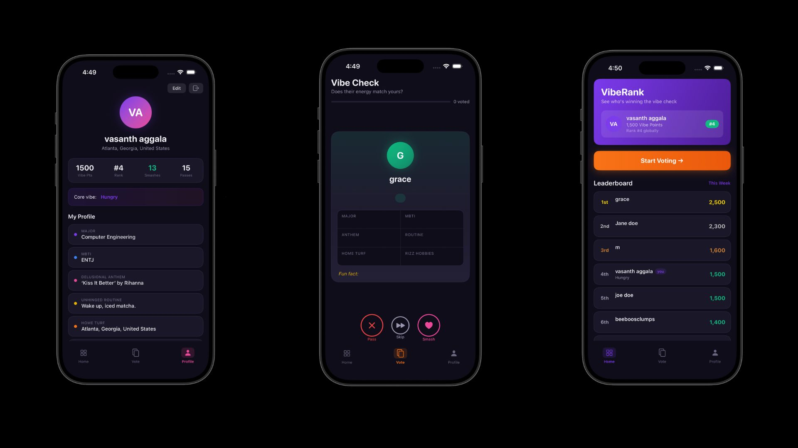
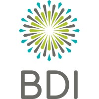

Work Experience
Undergraduate Research Assistant
Medford Group
Jan 2026 - Present
Undergraduate Research Assistant
Medford Group
Jan 2026 - Present
- Running DFT calculations on HPC resources to study catalyst behavior.
- Building scripts/pipelines to analyze outputs and summarize trends.
- Collaborating with the team to validate results and document findings.
Software Engineer Intern
Delta Airlines
Aug 2025 - Dec 2025
Software Engineer Intern
Delta Airlines
Aug 2025 - Dec 2025
- Developed models/analyses supporting flight safety monitoring workflows.
- Optimized ETL queries to improve reliability and reduce pipeline runtime.
- Partnered with stakeholders to translate requirements into deliverables.

Undergraduate Research Assistant
The Bhamla Lab
Mar 2025 - Aug 2025
Undergraduate Research Assistant
The Bhamla Lab
Mar 2025 - Aug 2025
- Worked with ESP32-based systems for instrumentation and data capture.
- Built a lightweight mobile/web interface to view and share testing data.
- Documented experiments and helped improve iteration speed in the lab.

General Consultant
Bobby Dodd Institute
Jan 2025 - May 2025
General Consultant
Bobby Dodd Institute
Jan 2025 - May 2025
- Wrote/organized compliance documentation for volunteer operations.
- Automated scheduling/onboarding workflows using Python + spreadsheets.
- Improved process clarity and reduced manual overhead for staff.